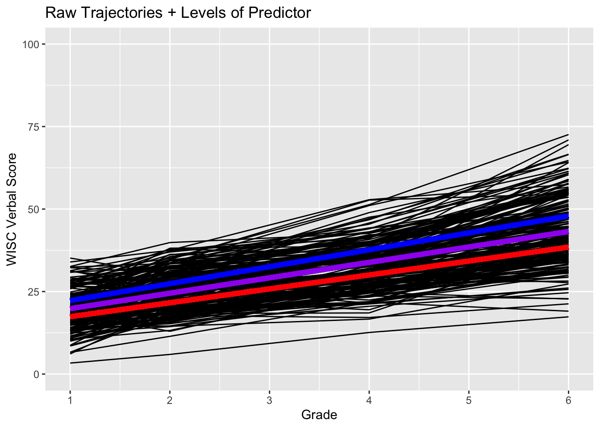
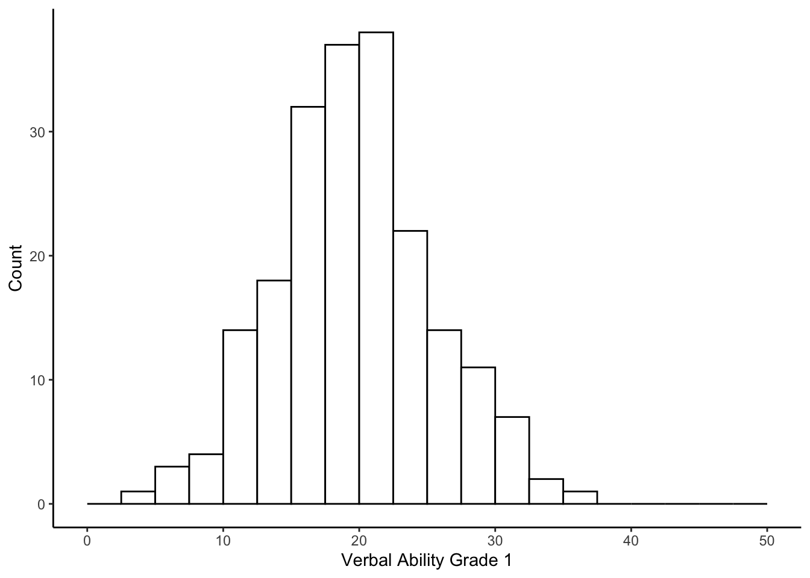
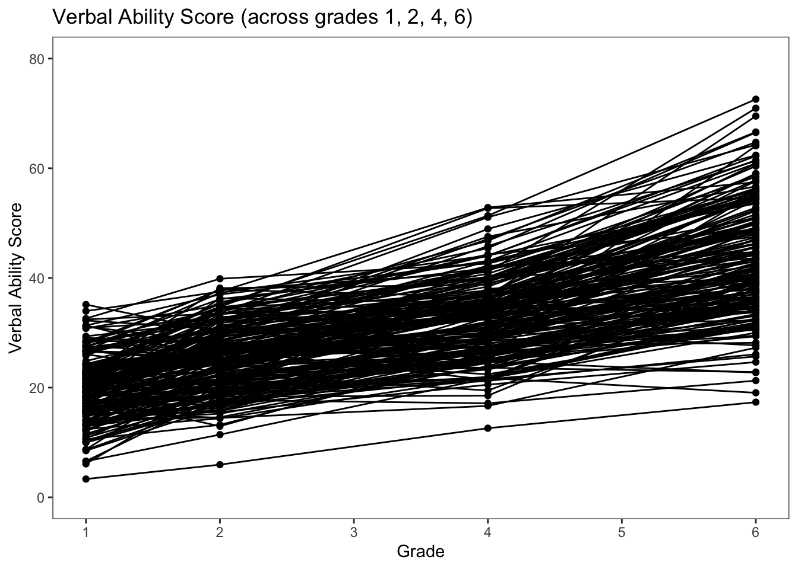

6.3 Simple Linear Regression
Let’s build up the model further. For example, we could attempt to explain some of the between-person variance in the Grade 2 verbal score from the Grade 1 verbal scores. But, before we do, let’s examine the distribution of the between-person differences in the Grade 1 verbal scores.
ggplot(wiscsub, aes(x=verb1)) +
geom_histogram(binwidth=2.5, fill="white", color="black", boundary=0) +
xlab("Verbal Ability Grade 1") +
ylab("Count") +
xlim(0,50) +
theme_classic() And the relation between the Grade 2 and Grade 1 verbal ability scores.
ggplot(wiscsub, aes(x=verb1, y = verb2)) +
geom_point() +
stat_ellipse(color="blue", alpha=.7) +
xlab("Verbal Ability Grade 1") +
ylab("Verbal Ability Grade 2") +
ylim(0,45) +
xlim(0,45) +
theme_classic() Our regression model becomes \[ verb_{2i} = b_01_i + b_1verb_{1i} + \epsilon_{i}\]
model2 <- lm(verb2 ~ 1 + verb1,
data = wiscsub,
na.action = na.exclude)
summary(model2)##
## Call:
## lm(formula = verb2 ~ 1 + verb1, data = wiscsub, na.action = na.exclude)
##
## Residuals:
## Min 1Q Median 3Q Max
## -11.5305 -3.0362 0.2526 2.7147 12.5020
##
## Coefficients:
## Estimate Std. Error t value Pr(>|t|)
## (Intercept) 10.62965 1.05164 10.11 <2e-16 ***
## verb1 0.75495 0.05149 14.66 <2e-16 ***
## ---
## Signif. codes: 0 '***' 0.001 '**' 0.01 '*' 0.05 '.' 0.1 ' ' 1
##
## Residual standard error: 4.261 on 202 degrees of freedom
## Multiple R-squared: 0.5156, Adjusted R-squared: 0.5132
## F-statistic: 215 on 1 and 202 DF, p-value: < 2.2e-16How do we interpret the parameters here?
The intercept, \(b_0\), is the expected value for the outcome variable when all of the predictor variables equal zero. So, we would expect a child to have a Grade 2 verbal score of 10.62965 if they have a Grade 1 verbal score of 0.
The slope, \(b_1\) is the expected difference in the outcome variable for each 1-unit difference in the predictor variable. So, across children, for each 1-point difference in a child’s Grade 1 verbal score, we would expect a 0.75495 point difference in the Grade 2 verbal score.
We can plot the relation between ‘verb1’ and ‘verb2,’ and include the predicted line from the analysis.
ggplot(data=wiscsub, aes(x=verb1,y=verb2)) +
geom_point(size = 2, shape=19) +
geom_smooth(method=lm,se=TRUE,fullrange=TRUE,colour="red", size=2) +
labs(x= "Verbal Ability Grade 1", y= "Verbal Ability Grade 2") +
xlim(0,50) +
ylim(0,50) +
theme_bw() +
theme(
plot.background = element_blank(),
panel.grid.major = element_blank(),
panel.grid.minor = element_blank(),
panel.border = element_blank()
) +
#draws x and y axis line
theme(axis.line = element_line(color = 'black')) +
#set size of axis labels and titles
theme(axis.text = element_text(size=12),
axis.title = element_text(size=14))## `geom_smooth()` using formula 'y ~ x'
Note that the lm() is run within the ggplot() + geom_smooth() function. Have to be a bit careful about this as the models get more complicated, but it is very useful for communication.